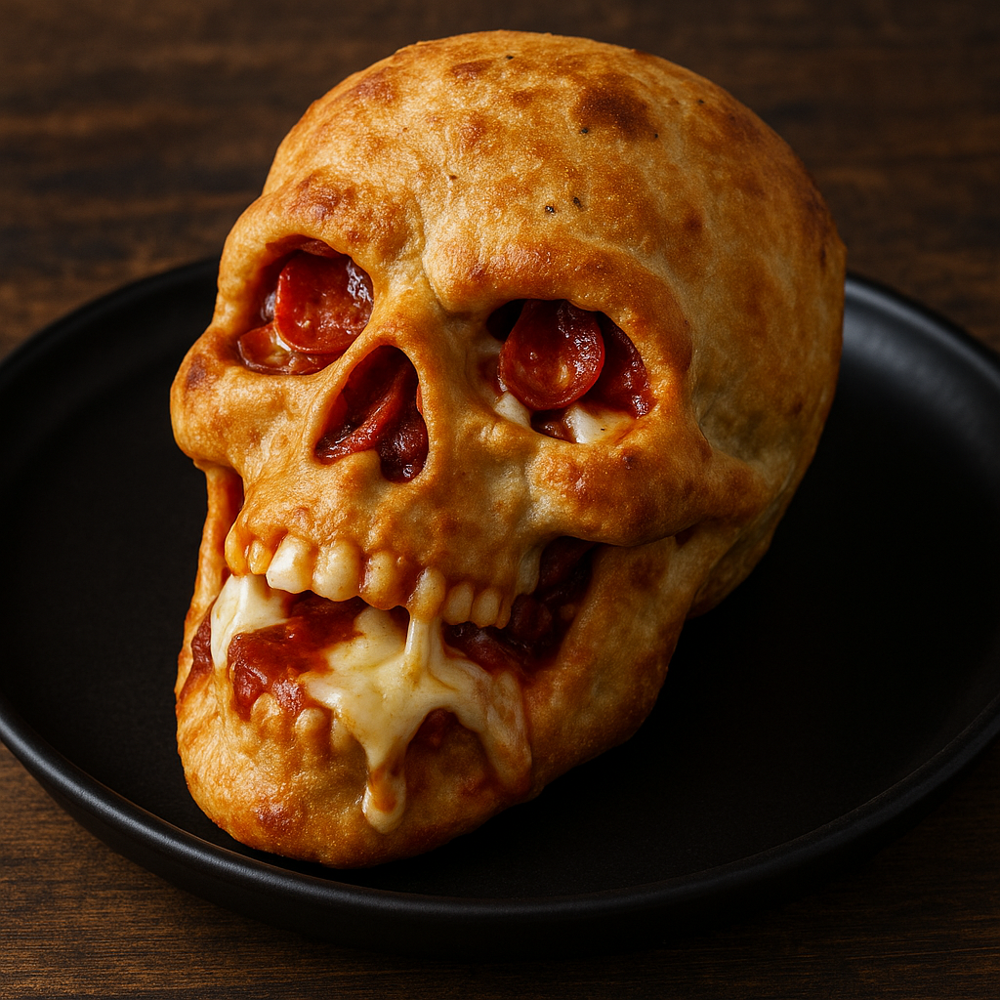

Pizza Skulls

Description
Just a spookily delicious treat for All Hallow's Eve. Come take a bite!
Original recipe © Elizabeth Bey. Photo AI generated.
Ingredients
- 1 cup whole wheat flour
- 3/4 cup plain non-fat Greek yogurt
- 1 tsp baking powder
- 1 1/2 tsp salt
- 1 Tbsp olive oil
- Mini pepperoni
- 1/2 cup pizza sauce
- 1/2 cup shredded mozzarella cheese
Dough:
Filling:
Steps
- Preheat oven to 375 degrees.
- In a bowl, mix the flour, baking powder, salt and herbs of choice. Stir in yogurt and olive oil until a dough forms. Knead for 1-2 minutes until smooth.
- Divide dough into 6 portions. Roll each piece thin enough to press into each skull cavity with a little overhang.
- In a separate bowl, mix pizza sauce, cheese and pepperoni together.
- Spoon filling into each skull cavity. Fold dough edges over and pinch to seal.
- Bake for 15-20 minutes until golden brown. Let cool 5 minutes before removing from pan.